Cada gráfo en el plano codifica un nudo o un enlace. Por ejemplo, el triángulo codifica el nudo trébol: 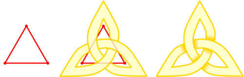
{kind=link}
un grafo es un conjunto de vértices y un conjunto de aristas entre parejas de vértices.
Los gráfos son muy fáciles de producir. Una gran clase de ellos es llamado "dessins d’enfants" (dibujos infantiles) por los matemáticos (es mi profesión). Aquí está un gráfo: 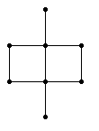
Su nudo es un símbolo de la dinastía Ming. El proceso para dibujar el nudo que codifica es en cuatro pasos:
- Ponga un cruce en el centro de cada arista.
- Conecte los bits de los hilos entre sí.
- Clasificar el patrón encima / abajo.
- Espesar su diseño.
Aquí hay un otro ejemplo:
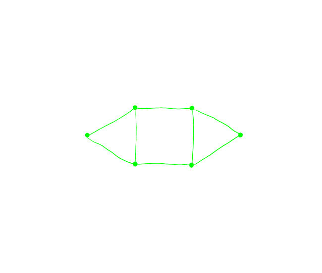
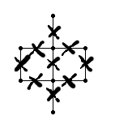Pero volvamos a un paso a paso en el símbolo de Ming. En primer lugar, ponemos un pequeño cruce en el centro de cada arista:
Es importante dibujar los cruces cuidadosamente para que no haya duda sobre la dirección a la que un hilo apunta. En particular, no simplemente marque el centro de la arista. Hay que tener cuidado con el ángulo, entre 30 y 60° entre la arista y el pedazo de hilo.
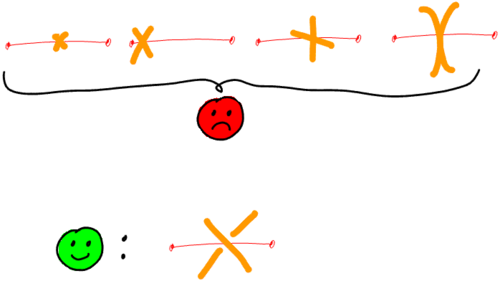
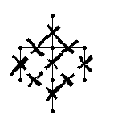Tiene que conectar estos trozos de hilos entre ellos para que fluyan bien sin principio ni fin. Para hacer eso, piense en su gráfo como un laberinto donde cada arista es una pared con una puerta abierta en el centro, donde se produce el cruce. 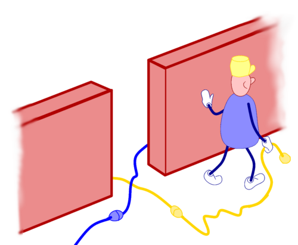 Elija un trozo de hilo, apunta en una dirección dada. Siga la pared en esa dirección, gire a la esquina, siga la pared hasta que usted alcance otra travesía. Uno de sus hilos apunta hacia usted, es con el que se conecta.
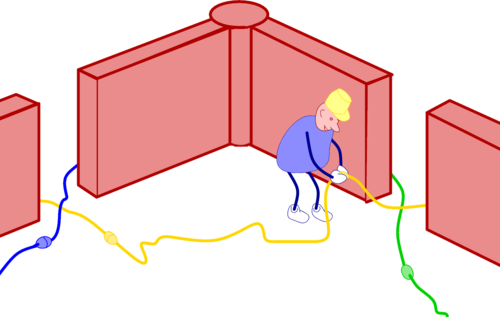
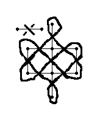En esta etapa, es necesario enderezar las cosas un poco para que cada hilo fluya bien. Pero no lo haga demasiado rápido, no trate de adivinar demasiado rápido, o bien caos ocurrirá. Así que no seas demasiado inteligente y aplicar las reglas según lo reglamentario.
En tercer lugar, en cada cruce, usted tiene que decidir qué hilo está arriba y cuál está abajo. Podría establecer el primero de manera arbitraria y luego seguirlo, debajo de entonces más, luego arriba, cambiando su estado en cada cruce a lo largo del camino. Eso puede funcionar para diseños pequeños, pero no es manejable para nudos más grandes. Usted termina con inconspectencies entre las partes de su dibujo.
Afortunadamente, hay una manera más fácil:
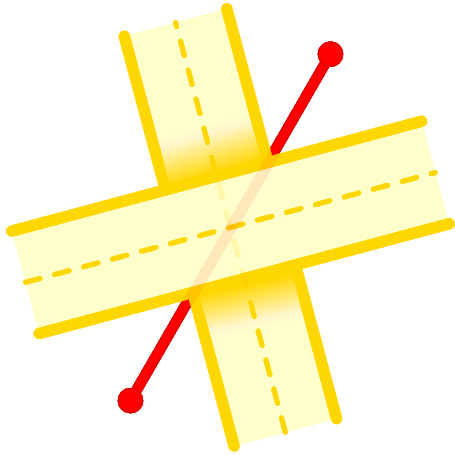Dibuja esta pequeña guía en una esquina de una página y arrójala. Luego, para cada arista de su gráfo, coloque su guía junto con ambas aristas alineadas. Decidirá por usted cuál de los dos hilos está en cima del otro.
{kind=link}
Otra forma de verlo es elegir una arista, alinear ese borde con su vista, imaginarse de pie sobre un vértice y mirar directamente a la cruce. Entonces, entre los dos hilos que cruzan delante de usted, uno viene de su derecha, el otro viene de su izquierda. Figúrese sosteniendo estos hilos con ambas manos, luego cruce sus brazos con (diga) el izquierdo sobre el derecho. 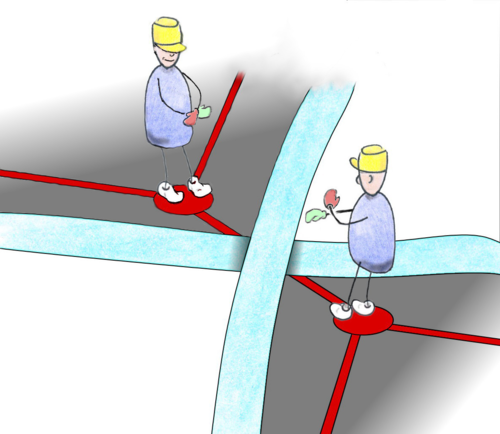
Luego infle su nudo. Piense en el hilo que acaba de dibujar como la línea amarilla en el centro de un camino: ahora dibujamos el lado izquierdo y el lado derecho de la carretera. Tenga cuidado de que en cada cruce hay un puente, un camino pasa bajo el puente y el otro pasa arriba. Usted debe empezar subrayando los puentes para que sepa por dónde empezar y dónde parar.
Ahora usted está listo para algunos ejercicios.